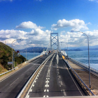
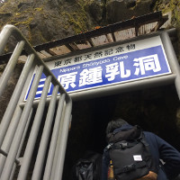
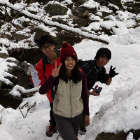
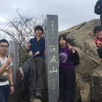
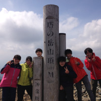
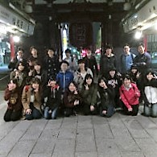
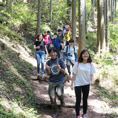
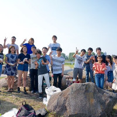

2016年 活動報告
- 
2/16-2/21 四国一周ドライブ
2/16-2/20にかけて四国一周ドライブに行ってきました！最終日以外は天候にも恵まれ最高の5日間でした。 - 
3/7 鍾乳洞探検
奥多摩の日原鍾乳洞に行ってきました。暗く、声の響く洞内は日常では味わえない、神秘的な雰囲気でした！ - 
3/15-3/16 両神山登山
秩父の両神山に行って来ました！！あたり一面は雪化粧しており、とても綺麗でしたが少し寒かったです（笑） - 
3/21 筑波山登山
百名山の筑波山に登ってきました！人気の高さからか沢山の人が山頂に向かっていました！ - 
3/28-3/29 丹沢山登山
丹沢の塔ノ岳に登ってきました！3年生3人、2年生2人、1年生1人です^ ^ 少ーし曇りだったのですが、涼しく気持ちよかったです！ - 
4/22-4/23 新歓東京ナイトウォーク
22日-23日にかけて夜の東京を満喫してきました！！約25kmという長いコースでしたが、眠気と疲れと戦いながら、1人も脱落者無く完歩することができました！ - 
4/30 新歓御岳山入門登山
奥多摩の御岳山に行ってきました！天気にも恵まれ、絶好の登山日和でした！新入生とも交流できまし！ - 
5/15 新歓BBQ
新年生が入って初めての活動でBBQをしました！沢山の新入生がはいってくれて、SACは今まで以上に盛り上がっていきそうです！